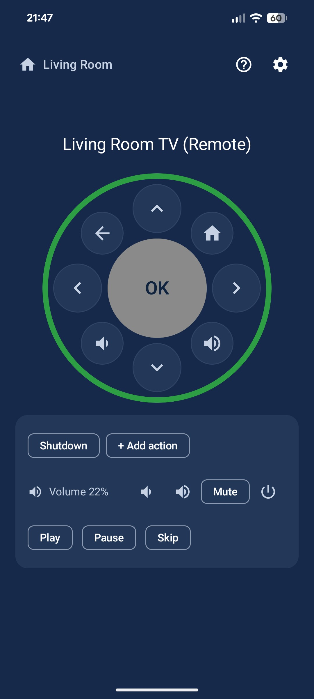

+ 01
Point & Shoot Control
Pointly uses your phone's rotation vector (compass + pitch) to detect what you're aiming at in real time. Aim at a lamp, speaker, or switch — no dashboard digging, no voice commands.
› Rotation vector: compass + pitch
◎ UNIVERSAL SPATIAL REMOTE · HOME ASSISTANT
Stop digging through dashboard cards, or saying “turn on the lamp” three times. Pointly turns your Android phone into a remote for Home Assistant: point it at a light, TV or speaker, tap once, and that device toggles.

SIMPLE & ACCURATE
01 · GREY
Sweep the room with your phone.
02 · AMBER
You're close, keep aiming.
03 · GREEN
Tap to toggle. Long-press to re-aim.
SEE IT IN ACTION
Aim, lock on, tap. This is Pointly driving real Home Assistant devices.
Point your phone at the target, tap the reticle, done. The matching runs on your phone's motion sensors and Home Assistant's room presence.
+ 01
Pointly uses your phone's rotation vector (compass + pitch) to detect what you're aiming at in real time. Aim at a lamp, speaker, or switch — no dashboard digging, no voice commands.
› Rotation vector: compass + pitch
+ 02
The circular target transitions smoothly from Grey (searching) to Amber (near a target) to Green (locked on). Tap to toggle, or long-press to re-aim.
› Tap to toggle · Long-press to teach
+ 03
Pointly checks which room you're in via Home Assistant before matching, so aiming at your bedside lamp can't trigger the living room lamp behind the wall. No room-aware entity? Manage rooms manually in Settings.
› Zones matched by name
+ 04
No coordinates to type. Long-press the reticle to enter Teach Mode, pick the entity from Home Assistant, aim at the fixture, save.
› Saved locally, instantly
+ 05
Beyond on/off: the context tray gives you brightness, volume, media transport, and any script you have mapped to that device.
› Brightness · Volume · Media · Scripts
+ 06
Dense cluster of devices? Tighten the tolerance cone to pick out individual bulbs. Solitary ceiling fan? Widen it so you can't miss. Tune the aiming cone per target in Settings.
› Per-target cone tuning
Always enter your server's direct LAN IP (e.g. http://192.168.1.100:8123). Android mDNS resolver can occasionally sleep or introduce 500ms lag.
Pointly matches zones by exact string. Use an entity that outputs specific room names (like BLE beacons or room helpers). A generic "home/away" person tracker will treat your entire house as one zone.
If aiming feels slightly drift-prone near steel appliances or TVs, wave your phone in a quick "figure-8" motion for 2 seconds to recalibrate the magnetometer.
Have a device you always want to be able to trigger, no matter what room you're in? Take it out of a room, and it'll show up wherever you are. Useful for setting a timer, or reminder.
WHAT YOU NEED
BEFORE YOU INSTALL
No. Pointly talks straight to the Home Assistant instance you already run. You paste your server address and a long-lived access token, and that is the whole setup. There is no sign-up and nothing is sent to me.
Yes. A local LAN address, Nabu Casa, or your own HTTPS endpoint, including a private CA or a self-signed certificate. A direct LAN address is still the fastest option, because Android's mDNS resolver can sleep and add a few hundred milliseconds.
Android 12 or newer. Pointly is an Android app; there is no iPhone version.
Your phone's rotation vector gives a compass bearing and a pitch angle. Pointly compares that against the bearings you taught it and lights the ring: grey while it searches, amber when something is close, green when a tap will fire.
Yes, as long as they are saved at different bearings. You can tighten the tolerance cone per device in Settings, and matching is scoped to the room you are in, so the bedroom lamp never fires the living room one through the wall.
Free, with an ad on the settings page only. No ads on the main screen. There is no subscription, nothing to buy in the app, and no account.
No. Pointly is independent and not made by, endorsed by or affiliated with Nabu Casa or the Home Assistant project. It talks to your instance the same way any client does.